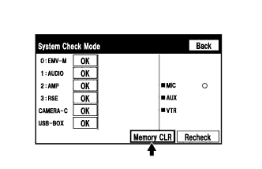

NAVIGATION SYSTEM (for DVD) > DTC CHECK / CLEAR |
| CHECK DTC (CHECK USING INTELLIGENT TESTER) |
Connect the intelligent tester to the DLC3.
Turn the engine switch on (IG).
Turn the intelligent tester on.
Enter the following menus: Body / Navigation System / DTC.
Check the DTC(s) and freeze frame data, and then write them down.
Check the details of the DTC(s) (Click here).
| System | Proceed to |
| Audio and Visual System (w/ Multi-display) |
Click here
|
| Rear Seat Entertainment System |
Click here
|
| Parking Assist Monitor System |
Click here
|
| Side Monitor System (w/ Parking Assist Monitor System) |
Click here
|
| Wide View Front Monitor System |
Click here
|
| CLEAR DTC (CLEAR USING INTELLIGENT TESTER) |
Connect the intelligent tester to the DLC3.
Turn the engine switch on (IG).
Turn the intelligent tester on.
Enter the following menus: Body / Navigation System / DTC.
Clear DTCs.
| START DIAGNOSTIC MODE |
There are 2 methods to start diagnostic mode. Start the mode by using either of them.
Method 1
Start the engine.
While pressing and holding the "INFO TEL" switch, operate the light control switch: off → turn on → turn off → turn on → turn off → turn on → turn off.
Diagnostic mode starts and the "System Check Mode" screen is displayed. Service inspection starts automatically and the result is displayed.
Method 2
Start the engine.
Press the "DISP" switch.
From the display quality adjustment screen, touch the corners of the screen in the following order: upper left → lower left → upper left → lower left → upper left → lower left.
| *a | Upper Left |
| *b | Lower Left |
Diagnostic mode starts and the "System Check Mode" screen is displayed.
| FINISH DIAGNOSTIC MODE |
Turn the engine switch off.
| FAILURE DIAGNOSIS |
 |
Press the "Failure Diagnosis" switch on the "Service Menu" screen.
The "Failure Diagnosis" is displayed.
| SYSTEM CHECK |
Press the "System Check" switch on the "Failure Diagnosis" screen.
 |
The "System Check Mode" screen is displayed.
| CHECK DTC (CHECK USING SYSTEM CHECK MODE SCREEN) |
Read the system check result.
If the check result is "EXCH" or "CHEK", touch the displayed check result.
View the results on the "Unit Check Mode" screen and record them.
| *a | Diagnostic Code |
 |
When proceeding to view the results of another device, press the "Back" switch to return to the "System Check Mode" screen.
| DTC CLEAR/RECHECK (CLEAR USING SYSTEM CHECK MODE SCREEN) |
|  |
Clear DTC
Press the "Memory CLR" switch for 3 seconds.
Confirm that the check results are cleared.
 |
Recheck
Press the "Recheck" switch.
Confirm that all check results are "OK" when the check results are displayed. If a result other than "OK" is displayed, troubleshoot again.